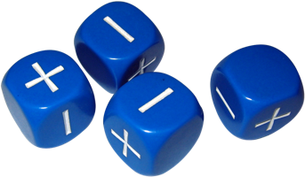

Fate e RPG Solo
Por Lucas Peixoto
Meus jogos analógicos
Geradores e autômatos
Oráculos e tabelas
Outros
Gerador de Personagem de Fantasia Medieval
Fichas aleatórias para Fate Condensado e Fate Acelerado.
Caixas de estresse e consequências são interativas!
Fate Condensado
Fate Acelerado
Qualquer classe
Bárbaro
Bardo
Bruxo
Clérigo
Druida
Feiticeiro
Guerreiro
Ladrão
Mago
Monge
Paladino
Patrulheiro
Qualquer bioforma
Anão
Draconato
Elfo
Gnomo
Goblin
Halfling
Humano
Tocado pelos planos
Gerar personagem
Ficha criada em https://lucaspeixoto.github.io
PDF